Project Manager · Business Analyst · IT Trainer · Jakarta
I run IT projects from the first requirement to the first real user.
Two years of delivering Power Platform, Power BI and SQL Server solutions for oil and gas, plantation and education clients, and training 300 to 500 professionals in the same tools. PMI CAPM certified.
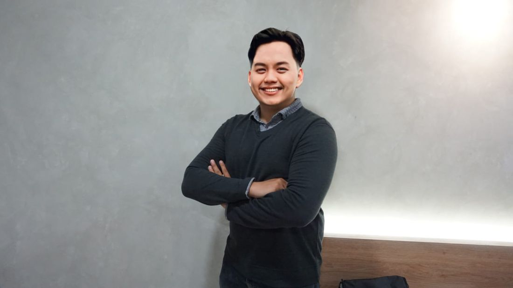
Dwiki Putra Pinontoan, S.Kom, CAPM
117People in the largest team led
IDR 300MLargest IT project delivered
300 to 500Professionals trained
8+Courses developed
CAPMPMI certified, Aug 2026
IDR 12BCookware sales, Aug 2025 to Feb 2026
Selected IT projects
Oct 2022 to present
Oil & Gas · ExxonMobil · Nov 2025 to Mar 2026
Owner Estimation System
Role
Project Manager
Team
10 people
Project value
IDR 300 million
Built with
Power Apps, Power Automate, SQL Server
Managed delivery of a cost estimation platform covering estimation workflows, user interfaces, calculation logic, scenario analysis and approval.
Built estimation logic and data models for accuracy, consistency and traceability of cost projections.
Implemented role-based access and an approval hierarchy that controls who submits, reviews and validates an estimate.
Aligned engineering, finance and procurement stakeholders on estimation parameters, then tested and validated the calculations against business rules.
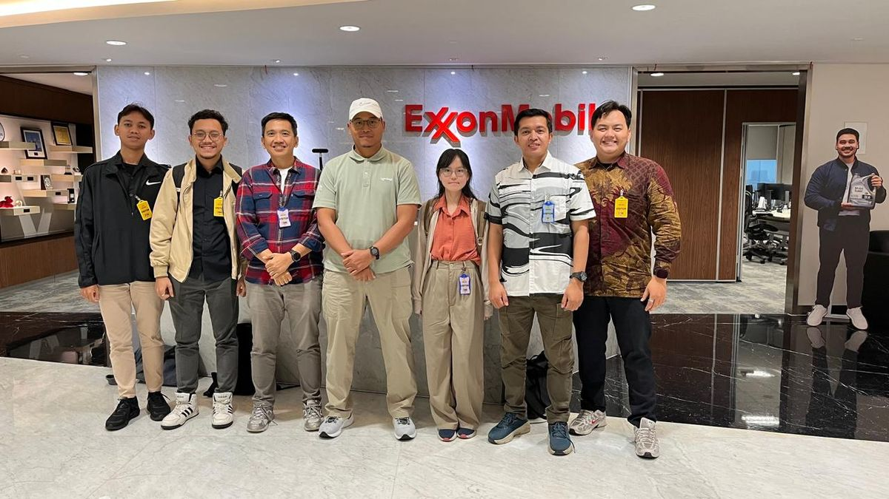
On site at ExxonMobil, Jakarta
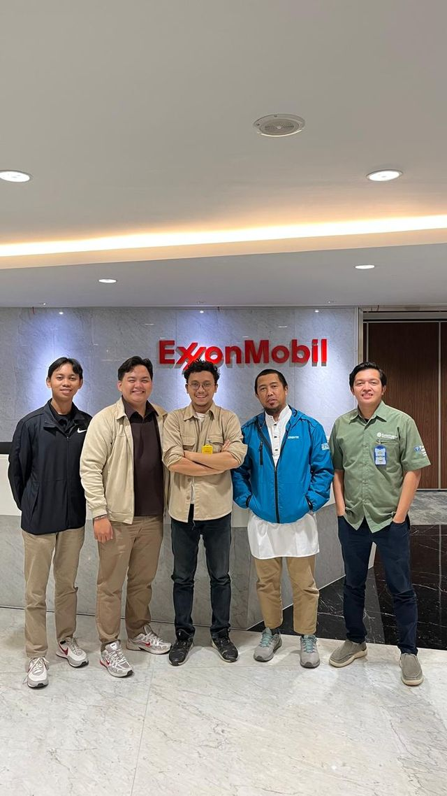
Delivery team
Jun 2025 to Nov 2025
Incoming & Outgoing Mail Document Management System
Secure document and correspondence workflows with role-based access, version control and an audit trail. Defined the document taxonomy, metadata standards and governance policies to meet data security, retention and confidentiality requirements.
Authored the BRD and technical proposal for the ExecuTrain digital learning roadmap 2027. Produced 29 use case specifications, 24 functional and 7 non-functional requirements, a WBS and a modular Agile/Scrum delivery plan.
Business Analyst / Project LeadExecuTrain of Jakarta8 user roles: student, client PIC, trainer, sales, admin, finance, management
2026 to present
Daily Plantation Supervision Report System
Led requirements, prototyping and solution selection. When the client ruled out cloud and on-site servers, reassessed the architecture and moved to a web app with offline data capture. Prepared the PMBOK documentation suite and a mandays estimate for the client presentation.
Tracks the procurement (MSR) stages required by SKK Migas, with officer, stage and contract value analysis.
Solution DesignerOil & Gas SCM departmentStar schema data model, interactive dashboards
2026
Split DNS Implementation Proposal
A 37-page technical proposal defining scope, deliverables, 24 test cases and a 15-item risk register.
PresalesPT Hexindo Adiperkasa TbkWindows Server 2022
Mar 2024 to May 2024
LPSE E-Procurement Scraping Tool and Dashboard
Led a 7-member team to build a data-extraction tool with scalable architecture, validation and error handling, plus a dashboard for analysing the extracted tenders.
Project ManagerProject value under IDR 50 million
Oct 2023 to Dec 2023
Garuda Indonesia Training Center Document Management System
Analysed the internal document process with SWOT, modelled the solution in UML and built a web-based system on a Waterfall plan, with role-based permissions, version control and data-protection compliance. Implemented for an internal team of 10.
Project Manager InternGaruda Indonesia Training Center
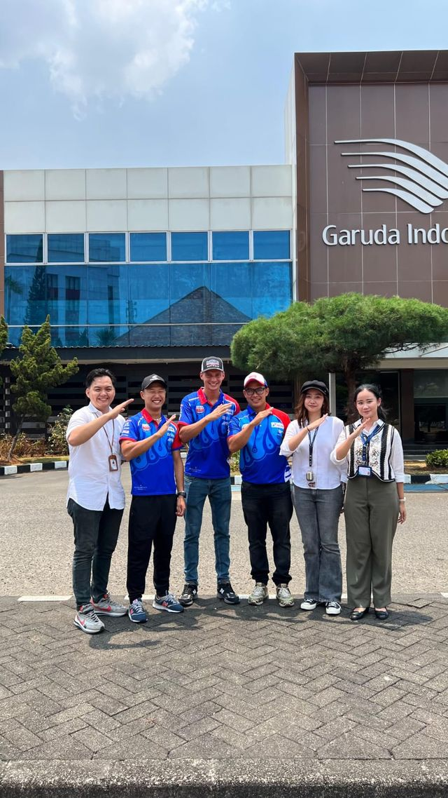
Garuda Indonesia Training Center, Jakarta
2022 to 2026
Power Platform and data solutions
Shipping App, Simple CRM, Performance Appraisal, Invoice Comparison and Voucher Taxi digitalization on Power Platform, and a Plantation Monitoring Dashboard for RLU in Power BI. Earlier: NUGASKUY education machine learning (volunteer, team of 7, Feb to Jun 2023) and the HIMSI organization dashboard (Oct 2022 to Jan 2023).
Delivery and solution designExecuTrain and volunteer projects
Training & courseware
ExecuTrain / ExceLEARN · Oct 2024 to present
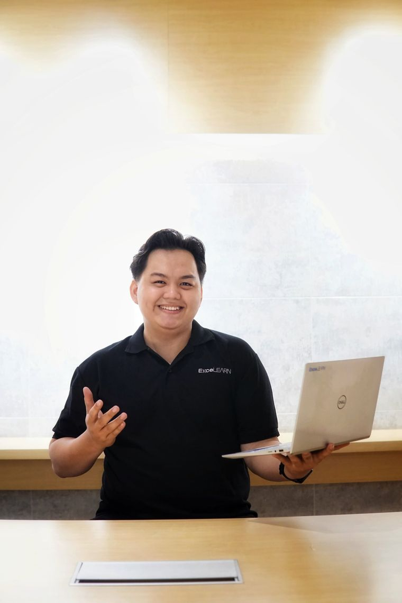
Facilitating for ExceLEARN
Between projects I teach the tools I build with: Power BI, Excel, T-SQL, Microsoft Project, Power Apps, Power Automate and Generative AI. Course content starts from a client needs survey, so exercises come from the participants' own work.
Trained 300 to 500 participants across banking, insurance, energy, automotive and oil and gas clients.
Ran needs surveys with 10 to 44 respondents and turned the results into customized courses, including private AI+ Prompt Engineer Level 1 classes of up to 44 participants.
Developed full learning assets for 8+ courses: course outlines, participant manuals, instructor guides, practice files and marketing presentations.
Designed AI adoption programs for office staff, such as the half-day AI for Office Productivity & Prompt Engineering program for PLN, and a Microsoft Copilot module for the MUFG Excel 365 course.
PT PLN (Persero)AI for Office Productivity & Prompt Engineering
MUFGManaging and Transforming Data in Excel 365, with Copilot
Suzuki Indomobil Motor, Pintar Inovasi Digital, Gearindo PrakarsaAnalyzing and Presenting Business Data in Excel 365
Federal International FinanceManaging Data Across Worksheets and Analyzing Data in Excel 365
PT Indonesia Nippon SeikiExcel Dashboard; Essentials T-SQL with SQL Server
PT Surya Citra Media, PT Tangkas Cipta OptimaCustomized Excel and Data Analysis
Courses developed
Information Technology Project Management3 days
ITIL Foundation
Project Management in Practice
Tableau
Looker Studio
BigQuery Advanced Query
Excel Dashboard with AI
Claude AI Powered Business Insight in Excel
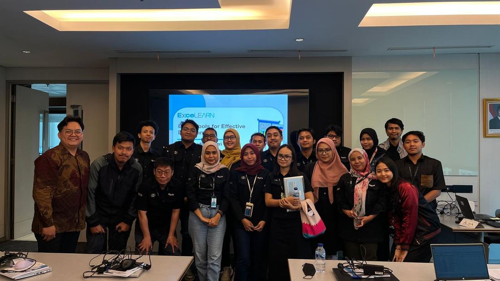
Client team after an Excel session
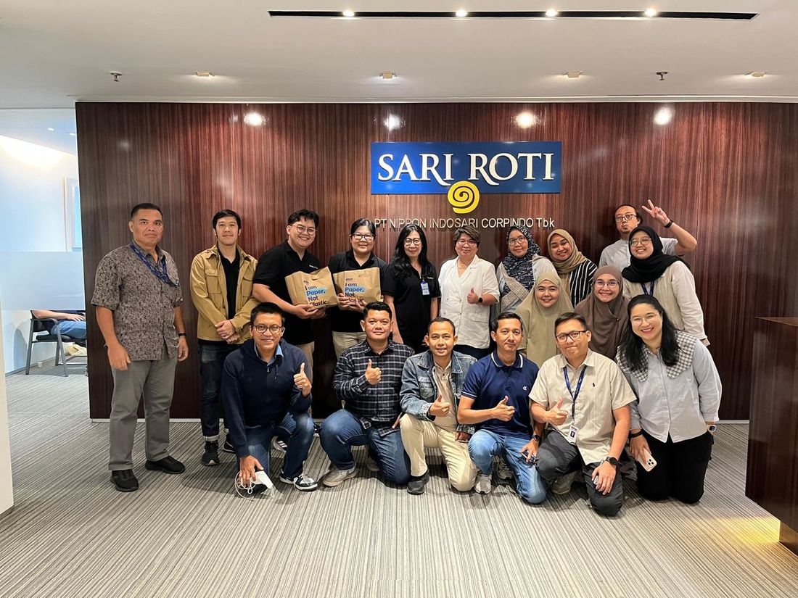
PT Nippon Indosari Corpindo Tbk, Jakarta
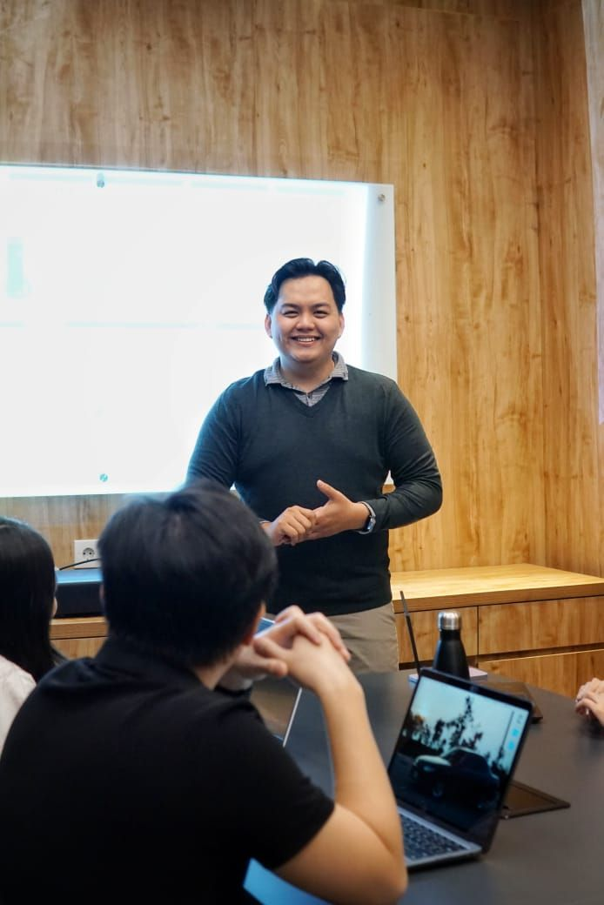
In-house session, Jakarta
Event project management
Jun 2023 to Jul 2024
TEDxUINJakarta 2.0Lead Organizer & Event Director · Jun 2023 to Jul 2024
Led a 117-member team across program, logistics, media and partnerships on a budget under IDR 100 million. Handled speaker, sponsor and committee communication and oversaw venue setup, technical requirements and the run of show.
Managed media outreach, partner correspondence, and speaker and sponsor liaison.
iPhone 15 Launch by iBoxTechnical Director · Mall Kelapa Gading
Led stage, audiovisual and vendor readiness in line with brand standards. Client: PT Data Citra Mandiri.
China Homelife 2022 and Mandalika Racing Team visitEvent Planner & Coordinator
Planned and coordinated the exhibition for PT Millenial Digital Indonesia and the team's visit to Garuda Indonesia Training Center.
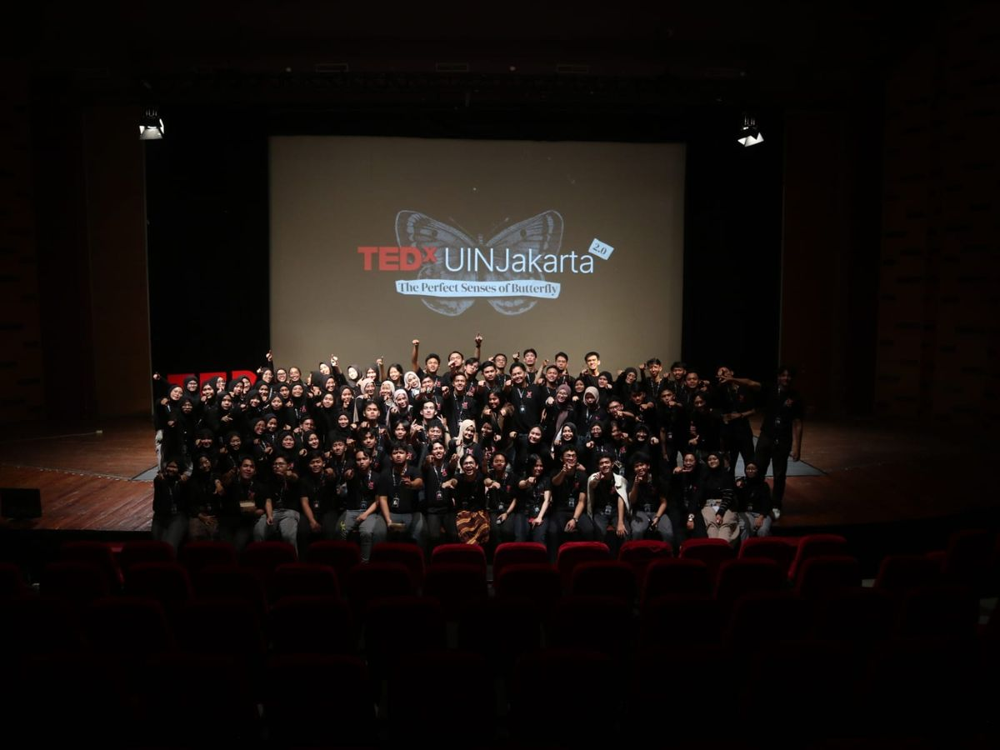
TEDxUINJakarta 2.0 committee
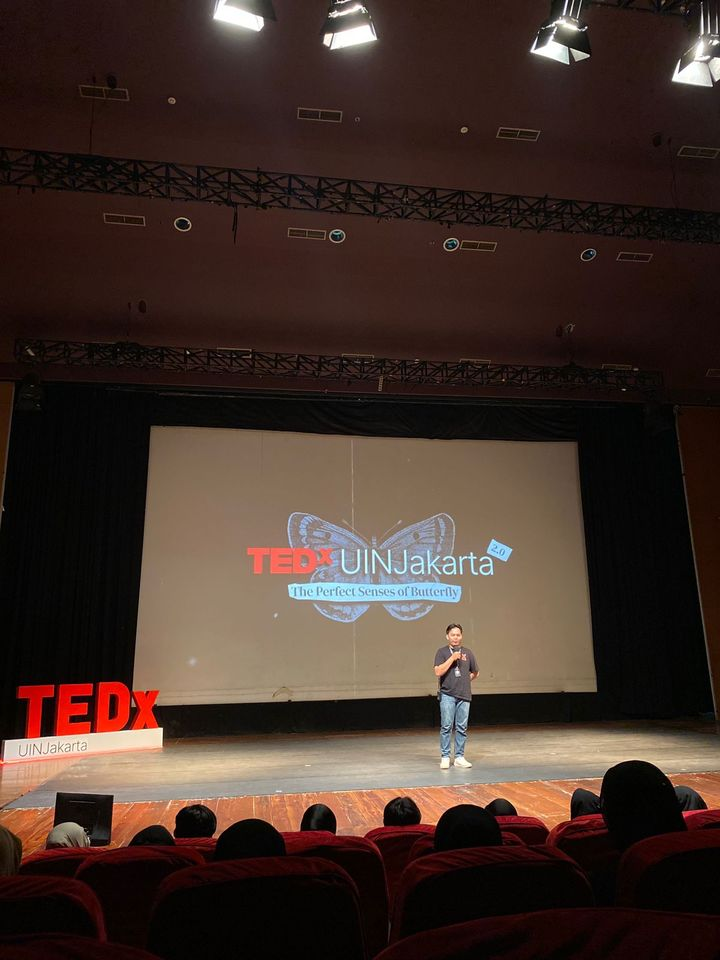
On stage, TEDxUINJakarta 2.0
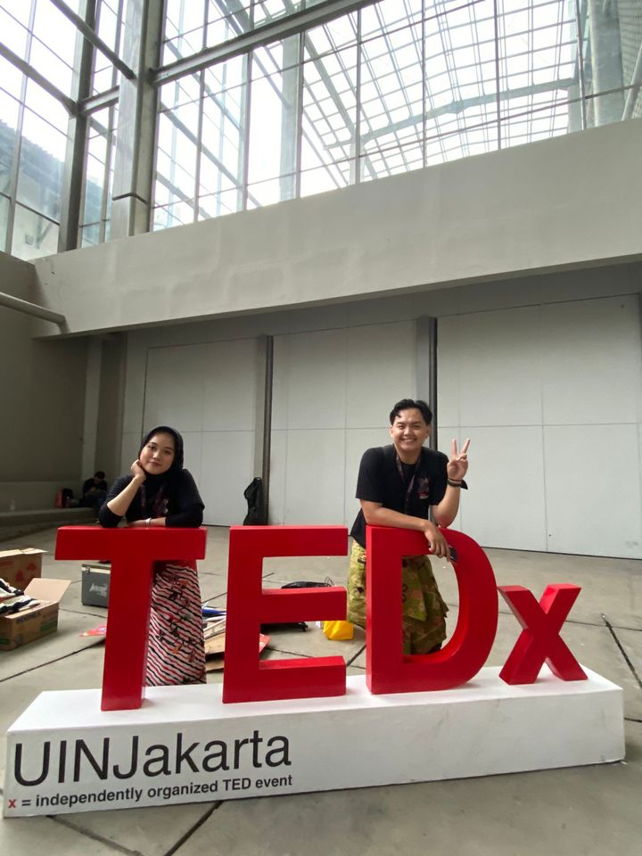
TEDxUINJakarta
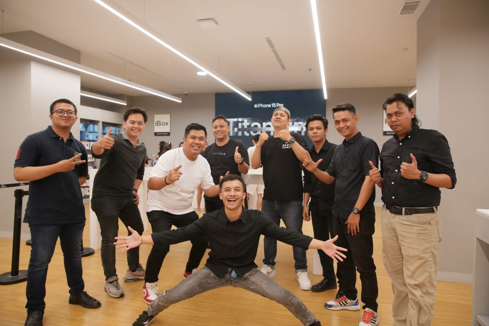
iPhone 15 launch, iBox
Side venture
Aug 2025 to Feb 2026
Large-scale cookware supplier to Eastern Indonesia
Alongside project work, I supply cookware products in volume to customers across Eastern Indonesia. Stock moves by the container, and the photos here are from unloading days.
IDR 12billion
Cumulative sales over seven months, August 2025 to February 2026.
AugSepOctNovDecJanFeb
Total for the period. Monthly split not shown.
Unloading a container, 32 sec
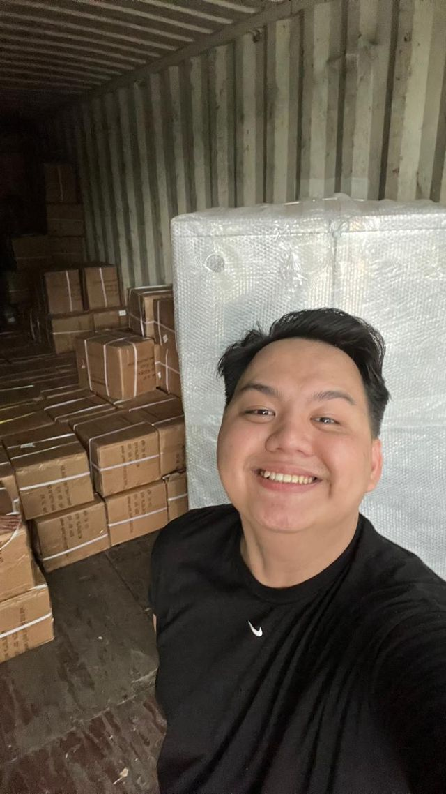
Inside the container
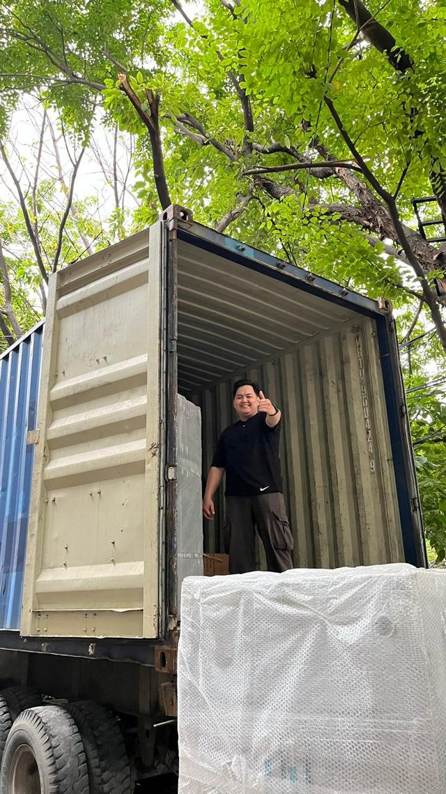
Container arrives
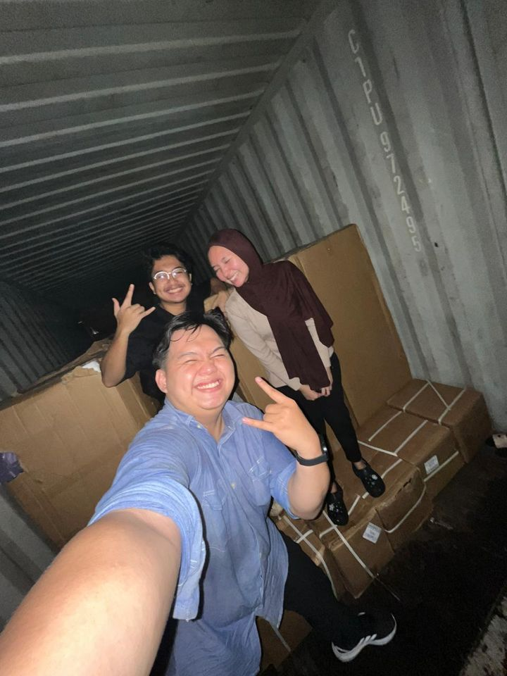
Unloading crew
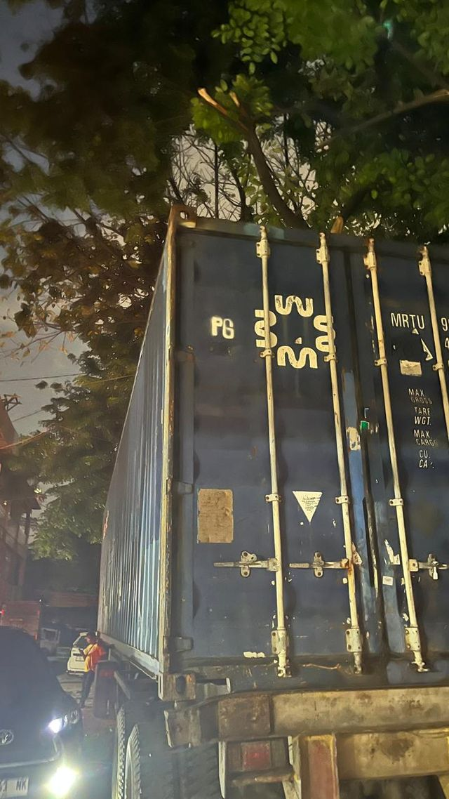
Night delivery
What I bring
Competencies
Project management
Predictive, hybrid, Agile/Scrum and Waterfall delivery. Scope, schedule and cost control, WBS, mandays estimation, risk, issue and change management, governance and reporting, presales support.
Microsoft ProjectPMBOK
Business analysis
Interviews and FGDs, BRD, use cases, user stories, acceptance criteria, traceability matrix, UML, SWOT and gap analysis, process improvement, solution design.
Technology and data
Power Apps, Power Automate, SharePoint, Power BI and DAX, T-SQL and SQL Server, Advanced Excel, Tableau, Looker Studio, BigQuery, star schema modeling, role-based access control.
AI and training
Generative AI and prompt engineering with ChatGPT, Claude, Microsoft Copilot and Gemini. Training needs analysis, curriculum and courseware design, facilitation for technical and non-technical audiences.
Background
Experience, education, credentials
Oct 2024 to present
Project Manager & IT TrainerPT ExecuTrain Nusantarajaya (ExecuTrain of Jakarta / ExceLEARN). Also helping build the internal Project Division and supervising an intern team on internal systems.
Oct 2023 to Dec 2023
Project Manager InternGaruda Indonesia Training Center, Jakarta
Dec 2022 to Sep 2023
Business DevelopmentRumahku D'Interior, Parepare. Market research, proposals and contract documents.
Oct 2022 to Jan 2023
Scrum Master InternPT Quantum Leap Innovation, Jakarta. Scrum ceremonies for a team of 27.
Mar 2022 to Jul 2023
Content Planner & Content Specialist (Freelance)PT Millenial Digital Indonesia, Jakarta. Content calendars and campaigns across YouTube, Instagram, TikTok, Shopee and Tokopedia.
Certified Associate in Project Management (CAPM)Project Management Institute. Certification No. 4499905, 11 Aug 2026 to 11 Aug 2029.
Bachelor of Information Systems (S.Kom)Syarif Hidayatullah State Islamic University (UIN) Jakarta, 2020 to 2024. GPA 3.64 / 4.00.
Google Data Analytics Professional CertificateGoogle & Coursera, 2023
Top 30 Capstone ProjectBangkit Academy led by Google, Tokopedia & Gojek, 2023
1st Place, National Business Plan CompetitionUniversity of Mataram, 2021
LanguagesIndonesian (native), English (professional), Mandarin (elementary, HSK 1 in progress)
Hiring a project manager or planning a training?
I work in Jakarta, in English and Indonesian. Write to me about a delivery that needs a plan, a requirements gap, or a corporate course built around your team's real work.